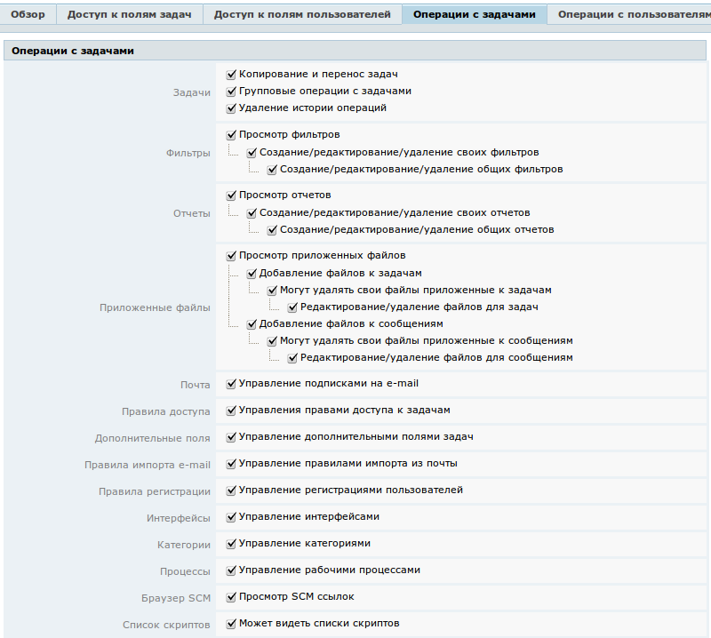
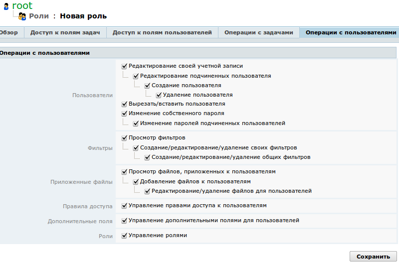

|
<< Click to Display Table of Contents >> Navigation: Rus > Руководство администратора > Как управлять ролями пользователей > Как разрешить или запретить пользователю выполнять определенные действия |
Вы можете ограничить для пользователей с определенными ролями доступ в некоторые разделы TrackStudio. Например, разумно будет запретить пользователям создавать, настраивать или удалять какие-либо процессы.
Для того, чтобы ограничить действия пользователей в управлении задачами:
•Перейдите через меню к управлению пользователями
•Перейдите через меню к странице "Роли"
•Перейдите к нужной роли через список
•Выберите вкладку "Операции с задачами"
Для обычных пользователей, не занимающихся настройкой TrackStudio, вы можете отключить почти все действия. Точно стоит запретить удаление истории операций — это действие и администраторам не следует выполнять без особых причин, т.к. удаление истории операций искажает информацию о движении задачи.
Чтобы пользователи не загромождали ваш экземпляр TrackStudio своими фильтрами и отчетами, можно запретить им создавать публичные отчеты и фильтры.
Управлять правами доступа к задачам можно разрешить менеджерам, руководителям проектов, руководителям отделов. Но обычным пользователям — запретить.
Управлять правилами импорта из почты, регистрацией новых пользователей и интерфейсами должны администраторы, а не обычные пользователи.

Для того, чтобы ограничить действия пользователей в управлении пользователями:
•Перейдите через меню к управлению пользователями
•Перейдите через меню к странице "Роли"
•Перейдите к нужной роли через список
•Выберите вкладку "Операции с пользователями"
Для обычных пользователей стоит запретить создание и удаление других учетных записей, управление правилами доступа и управление ролями.

Если вы планируете настраивать специальные роли пользователей для каждого процесса, как, например, это сделано в нашей конфигурации для Service Desk и как описано в руководстве, рекомендуем для основных ролей (с которыми будут регистрироваться или создаваться пользователи) оставить в разрешениях только операции с пользователями (смену пароля, изменение профиля и т.п.), а для специальных ролей, привязанных к процессам, напротив, убрать все операции с пользователями и настраивать операции с задачами с учетом выполняемых пользователем функций.